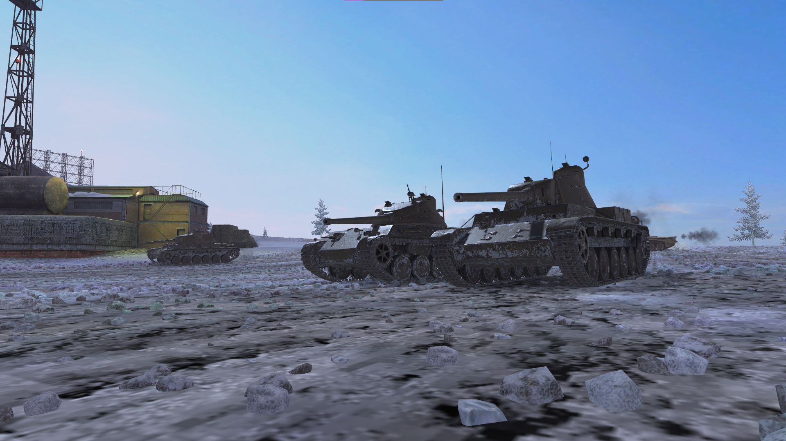
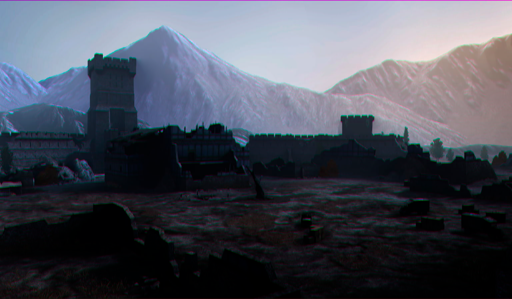
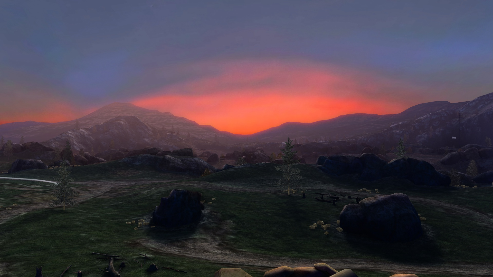
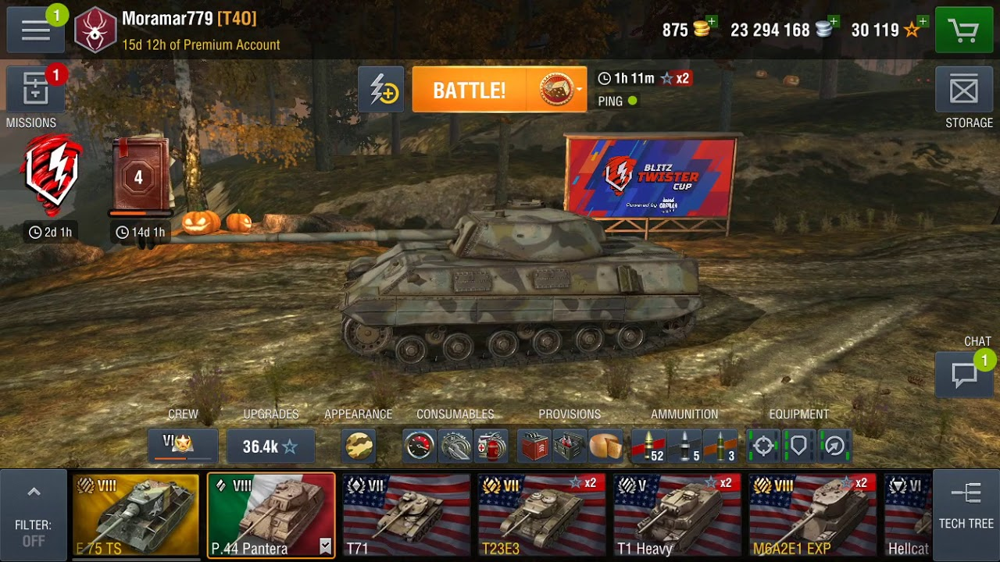
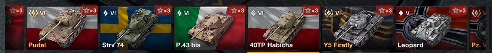
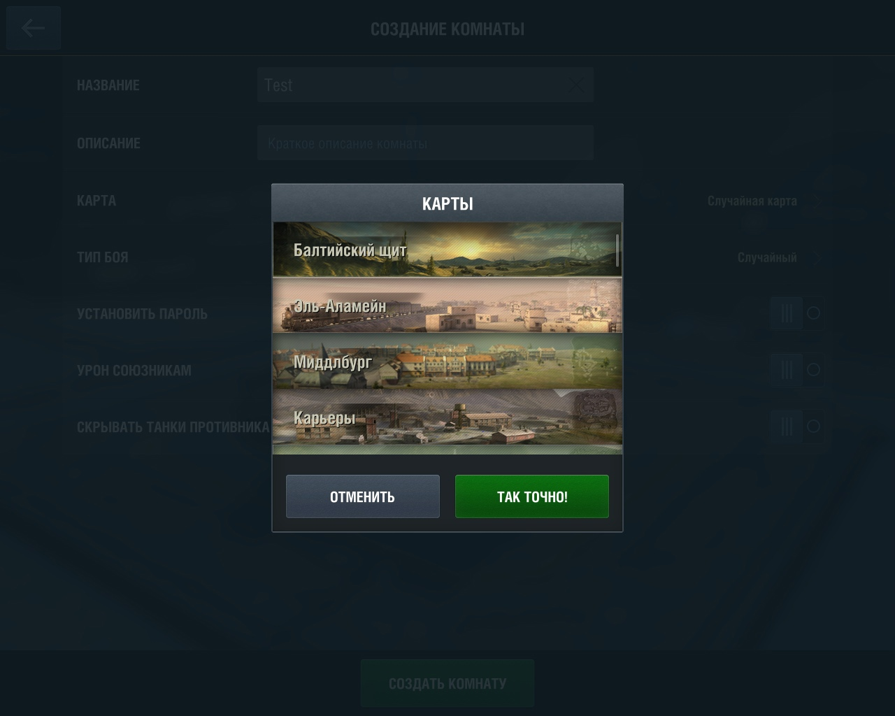
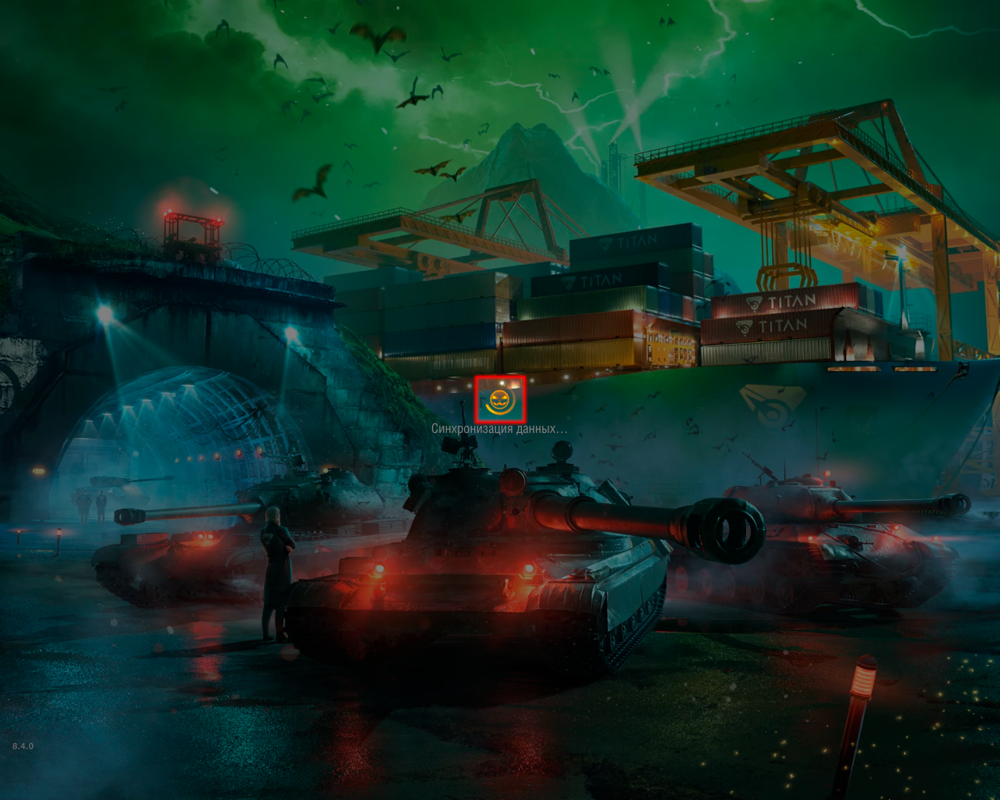

«Жуткий месяц»: октябрьское обновление модов
31.10.2021
Утренний Фауст - новый мод в серии "Not Classic"
Проведя опрос в наших сообществах победила карта "Утренний Фауст", что ж, встречайте! Утренний Фауст уже доступен для скачивания! На фаусте наконец закончилась длительная ночь и пришло долгожданное утро. Теперь карта не будет клонить вас в сон, а заряжать на новые подвиги!

Форт Вечного Противостояния - легендарная битва за мир смертных
В этом году Wargaming не порадовали нас особенными рестайлингами карт в стиле Хэллоуина. Мы решили исправить этот недочёт! Встречайте - "Форт Вечного Противостояния"! На этой карте вы не встретите хэллоуинской атрибутики и пугающих явлений. Но здесь вы сможете наблюдать в самом разгаре великую битву Света и Тьмы, которые сошлись в вечной схватке за право царить на земле. Мы, простые смертные, не можем как-то повлиять на исход этого противостояния, которое длится столько, сколько существует Земля - но мы можем бесконечно наслаждаться невероятными красотами, которые нам даёт смена Дня и Ночи.

Вечерний "Балтийский щит" восстал из мертвых!
Летом 2021 года мы думали что рестайлинги с изменным туманом навсегда покинут нас, но благодоря нашим друзьям из ModsTech мод на вечерний "Балтийский щит" уже обновлен под актуальную версию World of Tanks Blitz с небольшими правками. Добавленна поддержка PBR-танков, Android устройств, изменена мини-карта и экран загрузки. В будущем мы будем дальше переводить карты под старый лад, следите за новостями!

Интерфейсные изменения
В серии "Blitz Classic" появляются два новых мода, старые иконки наций и хэллоуинская иконка загрузки.
Как многие знают старый интерфейс ушел от нас в патче 6.5, ниже вы видите как он выглядел раньше.

В память о нем мы выпускаем мод на старые флаги наций в карусели танков, также, они выглядят куда живее и реалистичнее чем те которые есть сейчас в клиенте игры. В будущем модификация будет дорабатываться.

Для тренеровачных комнат изменены картинки некоторых карт, в будущем список будет пополняться.

Также выпущен мод на старую хэллоуинску иконку загрузки из патча 2.2.

Бой начинается со старой музыки
Совсем скоро выйдет мод на старую музыку от команды Blitz Classic. В ней все старые треки будут относится к своей карте как в старые времена. Следите за новостями!